|
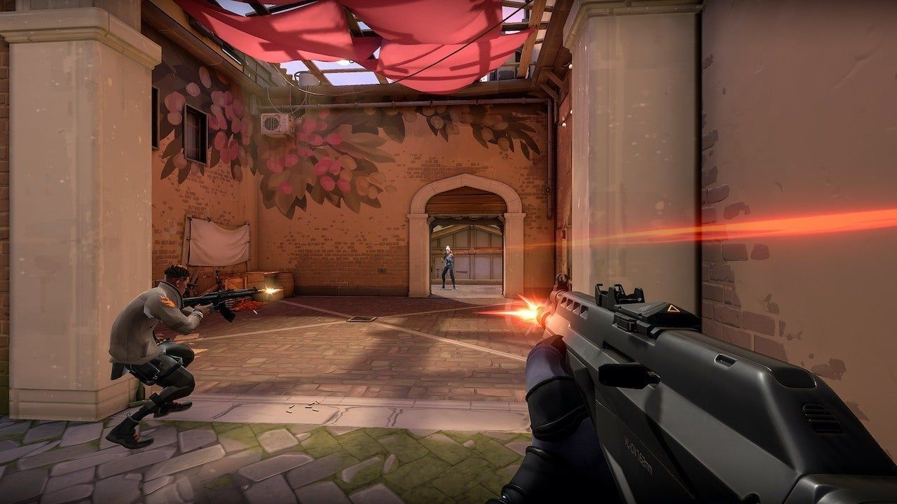 |
Se trata de un juego de disparos en primera persona (FPS) multijugador 5v5 donde un equipo ataca y el otro defiende. El modo de juego principal, Buscar y destruir, es muy similar a CS:GO. El objetivo del equipo atacante es colocar una bomba (llamada spike dentro del juego) y hacer que detone, mientras que el equipo defensor intenta evitarlo. Independiente de si se planta la guerra o no, si un escuadrón es eliminado antes de que se cumpla cualquier otra condición de victoria, el escuadrón contrario ganará.
Jugabilidad estándar de Valorant.Se alterna entre atacar y defender sitios tales como: Sitios A y B.
El primero en ganar las 13 rondas se lleva la victoria.
Basicamente este modo de juego trata de atacar y defender, después de la sexta ronda se intercambian
roles(el atacante defiende y el defensor ataca.) hasta llegar a las 13 victorias.
|
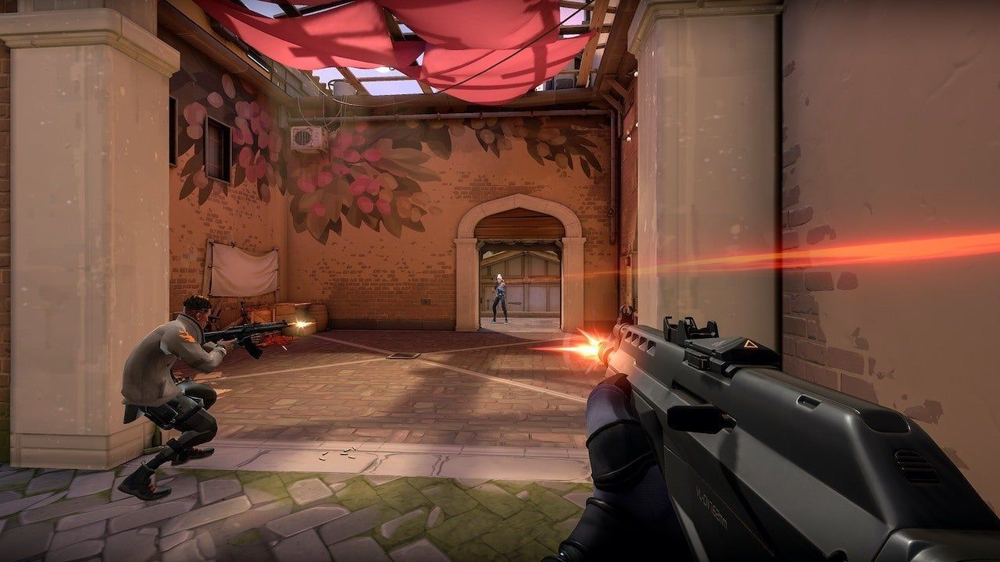 |
Esta modalidad den juego es la misma a la normal, con las mismas características y reglas, pero con
mucho más en juego ya que en este modo se compite para subir de rango.
| 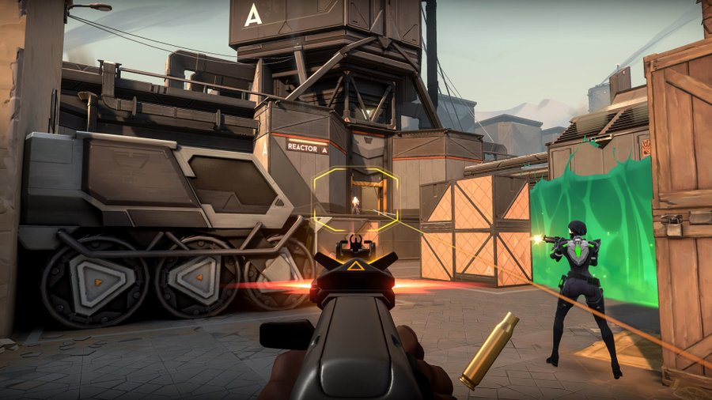 |
| 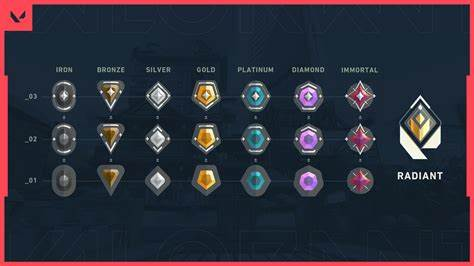 |
Este modo de juego es mucho más corta y con menor riesgo de Valorant. Tiene las mismas características que el modo de juego normal , pero con orbes de poder y equipamento de armas aleatorio. El primero en ganar 4 rondas se lleva la victoria.
 |
 |
Este modo de juego es un rápido duelo a muerte de todos contra todos, muy perfecta para practicar precisión y armas con personas reales sin habilidades. El primer jugador en lograr 40 asesinatos se lleva la victoria.
| 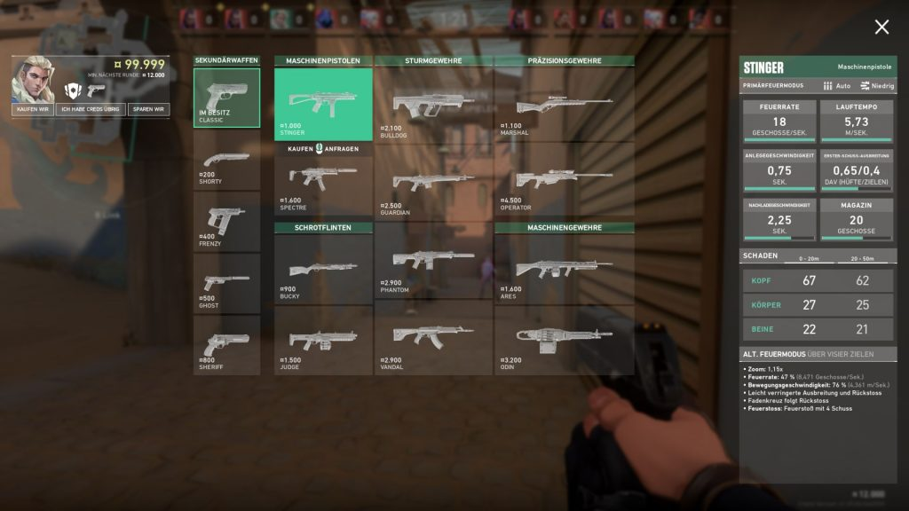 | 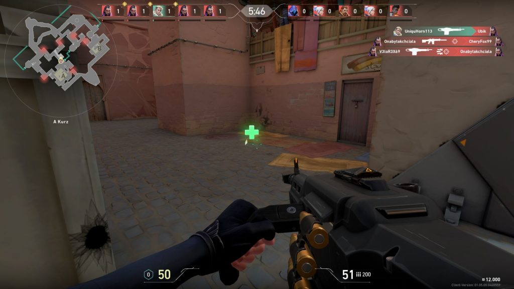 |
Este modo de juego tiene las mismas características que el modo normal de juego, pero todos los jugadores tienen el mismo agente(se elige al azar en ambos equipos). Hay creditos fijos por cada ronda, el primero en ganar 5 rondas se lleva la victoria.
| 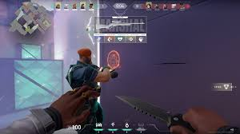 | 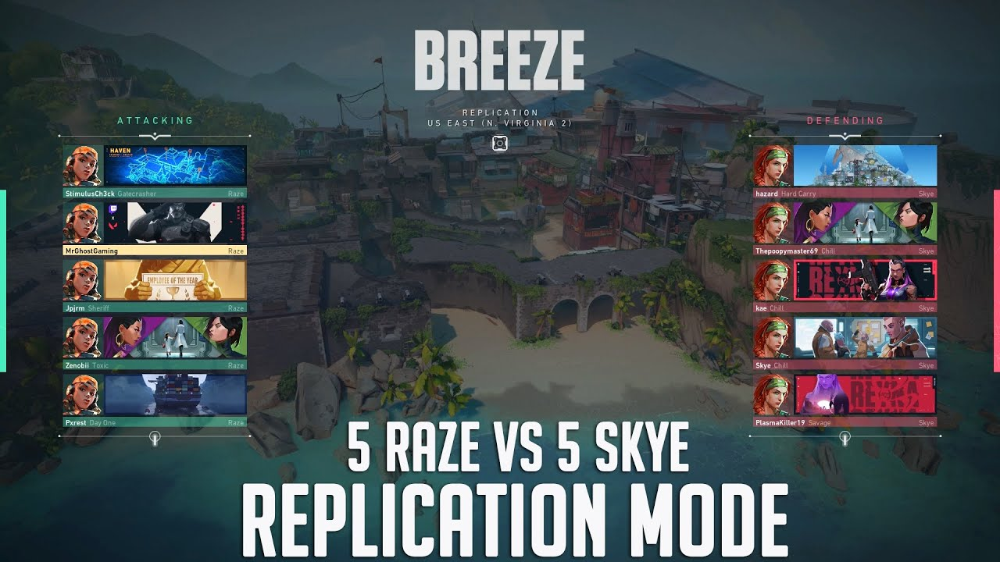 |
Este modo de juego es como un deathmatch pero por equipos, progresa a travéz de una serie de 12 diferentes armas y habilidades con tu equipo lo más rápido que puedan. El primer equipo en completar el último nivel (última arma) se lleva la victoria.
 |
 |
Este es un modo de juego en el cual puedes jugar cualquier modo disponible de lo antes mencionado ya sea para practicar con un amigo/a o para practicar en equipo.
| 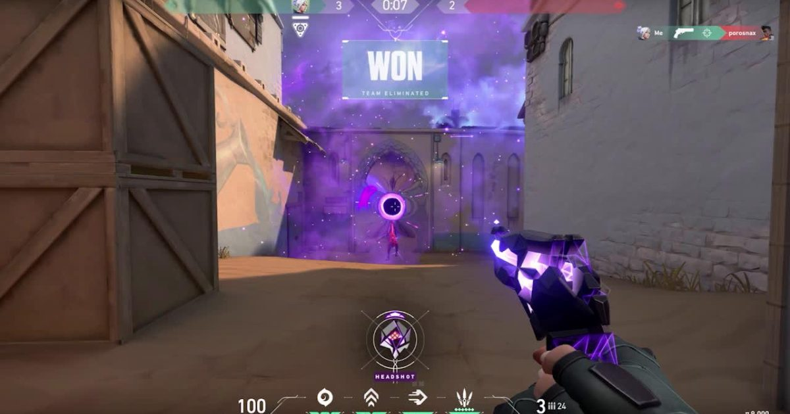 | 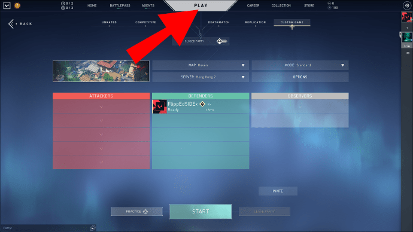 |
En este modo de juego puedes practicar solo cualquier modo para poder mejorar la puntería, el control y dominio de cualquier personaje(Agente).
| 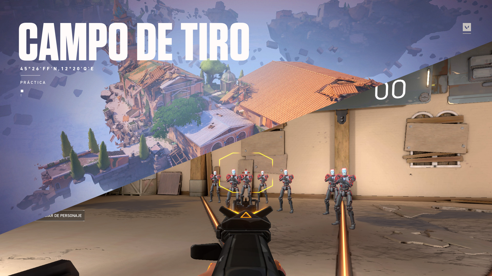 | 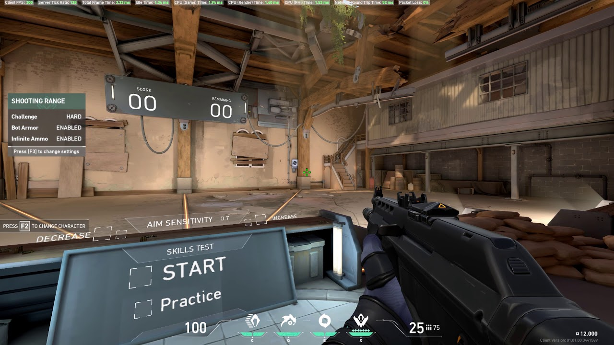 |
Ingrese a este enlace para saber mas sobre el juego.6